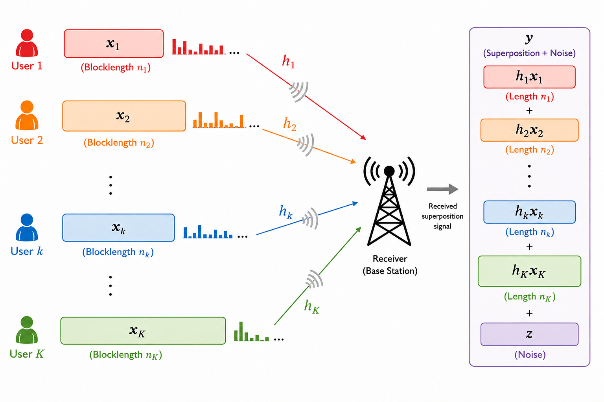
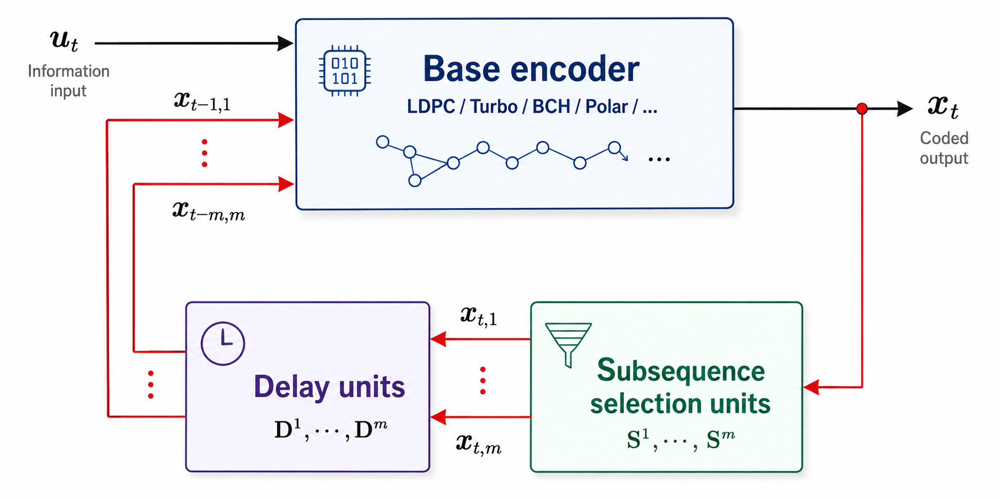
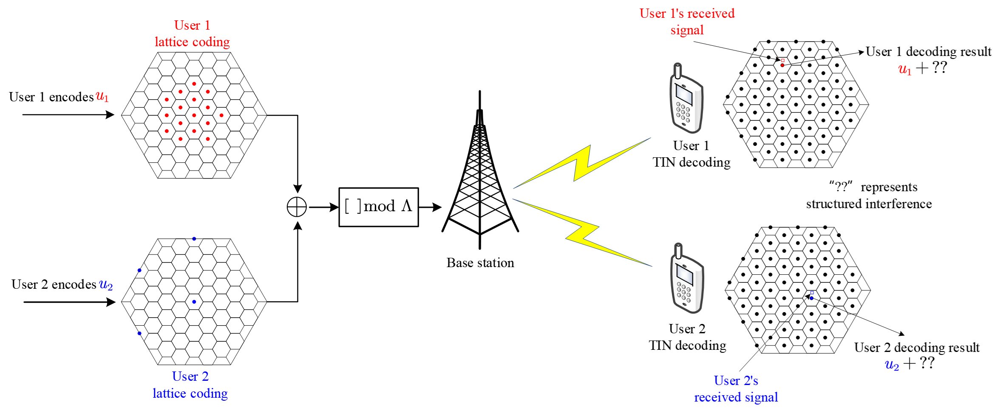

My research interests span the areas of channel coding and communication theory, with emphasis on applying coding theory to both wireless and optical communications as well as data storage. Some of the topics are shown below.
Research Highlights
Near-Optimal Multiple Access with Single-User Coding Complexity
Future wireless communication systems must support heterogeneous services, such as enhanced mobile broadband (eMBB) and ultra-reliable low-latency communications (URLLC), each with distinct blocklength, latency, and reliability requirements. As the number of connected devices and service types continues to grow, conventional orthogonal mmultiple access becomes increasingly inefficient and difficult to scale. Moreover, successive interference cancellation (SIC) techniques cannot be leverage by the decoding of URLLC.
This research direction designs transmission schemes based on practical channel coding and modulation to support heterogeneous services effectively and simultaneously, and characterize the achievable rate region under heterogeneous blocklength constraints and error probability requirements. A central feature is single-user-based encoding and decoding (i.e., treating interference as noise) for each user.

Towards Universal Spatially Coupled Codes
The concept of spatial coupling is among the most significant breakthroughs in coding theory over the past decade. The excellent waterfall and error floor performance of spatially coupled codes has positioned them as promising coding candidates for future communication and data storage systems. This line of work studies coding structures and iterative decoding methods for reliable wireless and optical communication systems, such as spatially coupled LDPC codes, turbo-like codes, product-like codes, and related code constructions. A major objective is to develop simpler coupling structures and low-complexity decoding algorithms that can be rigorously shown to achieve threshold saturation and universality over a broad class of communication channels. The research also investigates the finite-blocklength scaling behavior of spatially coupled codes to bridge the gap between asymptotic theory and practical implementations.

Lattice Partition Multiple Access without Successive Interference Cancellation (SIC)
Non-orthogonal multiple access is motivated by the classical Gaussian broadcast channel, where superposition coding and successive interference cancellation can achieve the capacity region. In practice, however, Gaussian inputs are difficult to realize, and SIC can introduce additional decoding complexity, latency, and error propagation, especially as the number of users grows.
This research develops a lattice-partition based downlink multiuser transmission framework without SIC. By exploiting the algebraic structure of lattices, the scheme harnesses multiuser interference using practical discrete signaling such as QAM and treating interference as noise. The framework has been shown to achieve the capacity region of Gaussian broadcast channels to within a constant gap independent of channel parameters, and has been extended to broadcast and interference channels with practical channel-state assumptions.

Delay-Doppler Domain Communications and ISAC
This line of work studies orthogonal delay-Doppler division multiplexing, integrated sensing and communication waveforms, and receiver algorithms for communication and sensing systems.